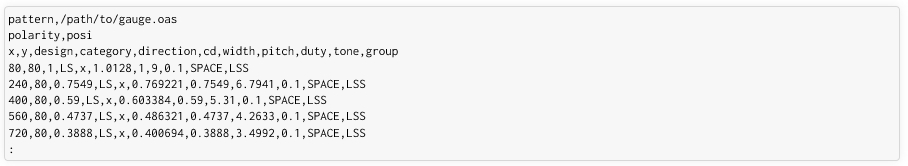

Points file creation
The measurement results should be converted into points file, which is the input format of bfit.
If the gauge was created using bfit-gauge, then the points file is created along with the gauge pattern.
The measurement results should then be filled into the cd column in [um] unit.
If the gauge was created in some other manner, then a manually prepared points file is required;
one that has the correct preamble and having at least these columns: x, y, design, direction, category, cd.
